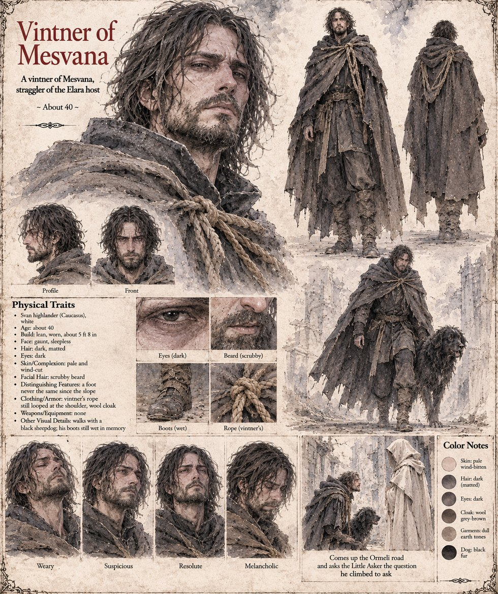

Vintner of Mesvana
A vintner of Mesvana, straggler of the Elara host · unnamed · about 40 on his sheet · sheet only
The manuscript has no vintner of Mesvana and no straggler from the host with a dog; this page is the sheet’s. What the manuscript gives is the world he is drawn into. Mesvana is one of the Mother’s four valleys, Mesvana of the river-mills, whose mills in the drought year of the vintage stand idle beside a stream a child could cross in sandals. On the twenty-fifth of Iverin the Elara host sets out down the Wine Road, seven thousand men of Bakviri, Mesvana, Tskhavar, and Nakuri, with the vintners’ ropes still looped over their shoulders; on the twenty-eighth it deploys among the unripe vines south of Samaghvto, and in eleven minutes three thousand one hundred of them are killed by ice under a sky that had been blue ten minutes earlier. The rest run and throw down their ropes. The survivors went home by the mule roads, carrying their dead on hurdles and the story in their mouths, and in Lorren, with snow on the high road, the host of Mesvana has still not all come home from the Hall.
The sheet draws one of them, about forty, lean, gaunt and sleepless, with matted dark hair, a scrubby beard and a foot that has never been the same since the slope. His vintner’s rope is still looped at his shoulder, where the manuscript has the survivors throwing theirs down. He has no weapon, and he walks with a black sheepdog, Mesvana’s Hound. His panels are Weary, Suspicious, Resolute and Melancholic, and its one scene is Comes up the Ormeli road and asks the Little Asker the question he climbed to ask, which shows him on a snowless slope before a pale hooded figure. The manuscript has no such meeting and does not say what the question is; its Little Asker is, in those years, a woman in her thirties in a valley under the same dry sky, whom strangers have looked at since she was nine. The sheet’s build of about 5 ft 8 in, pale wind-cut skin, dark eyes, wool cloak, wet boots and dull earth tones, its tiles Eyes, Beard, Boots (wet) and Rope (vintner’s) and its note that his boots are still wet in memory are likewise its own.
“with the vintners’ ropes still looped over their shoulders”